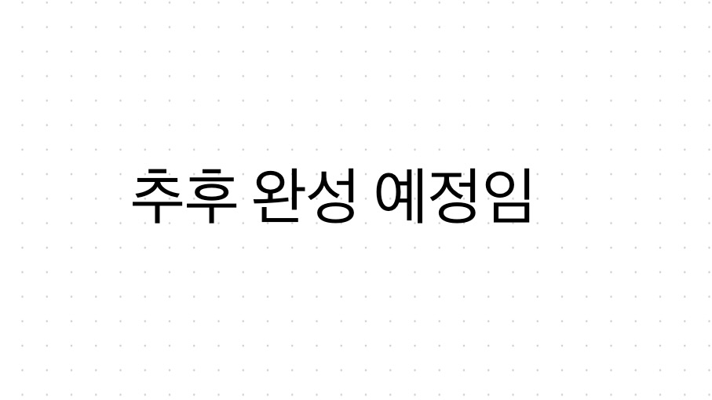

<div id="logo" class="container">
    <div class="img_wrapper">
        <span class="arrow_backward">
            <svg xmlns="http://www.w3.org/2000/svg" class="ionicon" viewBox="0 0 512 512">
                <title>Arrow Backward</title>
                <path class="arrow-path" d="M268 112l144 144-144 144M392 256H100" />
            </svg>
        </span>
        
        <span class="arrow_forward">
            <svg xmlns="http://www.w3.org/2000/svg" class="ionicon" viewBox="0 0 512 512">
                <title>Arrow Forward</title>
                <path class="arrow-path" d="M268 112l144 144-144 144M392 256H100" />
            </svg>
        </span>
    </div>
    <div>
        <div>
            <h1>추후 완성 예정임</h1>
        </div>
    </div>
</div>